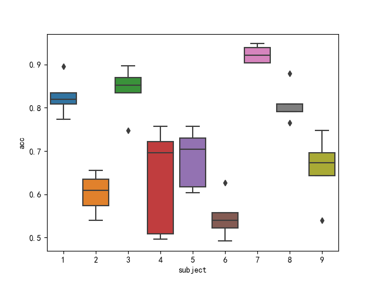
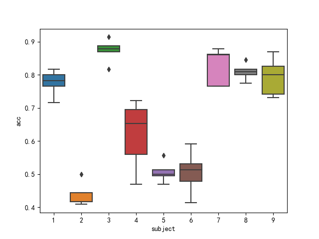
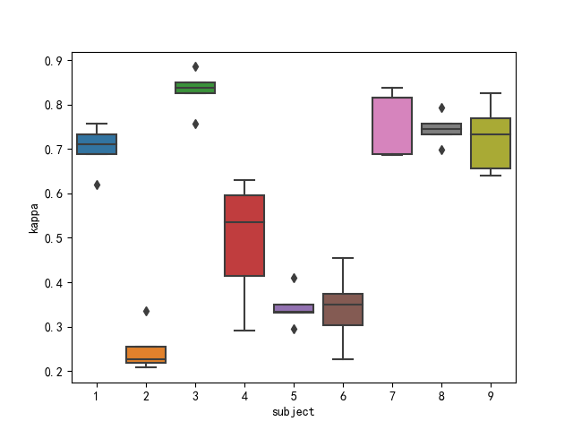
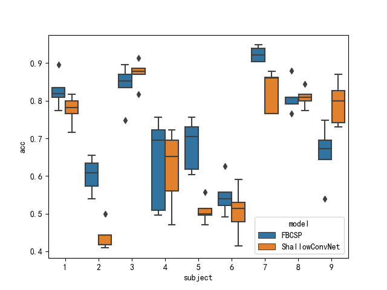
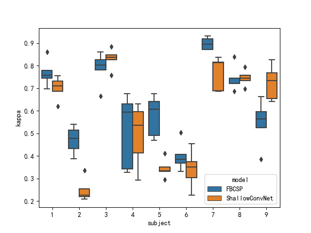

Compare different models on same datasets¶
First import necessary package:
from Offline.datasets.moabb import MOABBDataset,moabb_dataset_list
from Offline.profile.manifest import BugZero
from Offline.processing.preprocess import Preprocessor,exponential_moving_standardize
from Paradigm.base import OfflineParadigm,SubjectDependentParadigm
from Offline.trainning.Factory import SkorchFactory,CSPFactory
Chose the dataset to test on:
dataset_name = moabb_dataset_list[1][0]
n_subject = moabb_dataset_list[1][1]
datasets = {}
for i in range(n_subject):
datasets[i+1] = MOABBDataset(dataset_name=dataset_name,subject_ids=[i+1])
Define preprocess pipeline:
low_cut_hz = 4.
high_cut_hz = 38.
factor_new = 1e-3
init_block_size = 1000
preps = {
1:[Preprocessor('pick',picks='eeg'),
Preprocessor(lambda x: x * 1e6), # Convert from V to uV
Preprocessor('filter', l_freq=low_cut_hz, h_freq=high_cut_hz), # Bandpass filter
Preprocessor(exponential_moving_standardize, # Exponential moving standardization
factor_new=factor_new, init_block_size=init_block_size),
Preprocessor('resample',sfreq=50)
],
2:[Preprocessor('pick',picks='eeg')]
}
Define algorithms to train model, in this example, FBCSP and ShallowConvNet:
from Offline.models.braindecode.shallow_fbcsp import ShallowFBCSPNet
from Offline.models.CSP.FBCSP import FBCSP
from sklearn.svm import SVC
alg = {
1: SkorchFactory(Model=ShallowFBCSPNet,max_epochs=250),
2: CSPFactory(Model=FBCSP)
}
Define algorithms to inspect model:
from Offline.trainning.Factory import SkorchInspector,CSPInspector
from Offline.trainning.Inspector import InspectorSyn
ispt = {
1:SkorchInspector(InspectorSyn(pos_label=None),cuda=True),
2:CSPInspector(InspectorSyn(pos_label=None))
}
Now define paradigm:
para = SubjectDependentParadigm(datasets=datasets,protocols=None,algorithms=alg,control_signal_mode='active',preprocess=preps,inspectors=ispt)
Import models to compare:
cnn = ShallowFBCSPNet(in_chans=22,n_classes=4,input_window_samples=200,final_conv_length='auto',n_filters_spat=50,n_filters_time=50)
fbcsp = FBCSP(sfreq=250,time_steps=1000,window_start=0,window_length=1000,clf=SVC(probability=True),select_ratio=0.6,l_freq=4,h_freq=38,n_cuts=10)
re_subjects, trainned_model_subjects, df_subjects = para.run_cv_on_dataset(preprocesser_id=1,algorithm_id=1,inspector_id=1,n_fold=5,
model=cnn,trial_start_offset_seconds=0,trial_end_offset_seconds=0,
model_name='ShallowConvNet',metrics=['acc','kappa','model','subject'])
re_subjects_1, trainned_model_subjects_1, df_subjects_1 = para.run_cv_on_dataset(preprocesser_id=2,algorithm_id=2,inspector_id=2,n_fold=5,
model=fbcsp,trial_start_offset_seconds=0,trial_end_offset_seconds=0,
model_name='FBCSP',metrics=['acc','kappa','model','subject'])
Concatenate results:
df = df_subjects.append(df_subjects_1)
Now visualize results, first we compare FBCSP’s performance subject-wise:
import seaborn as sns
sns.boxplot(x='subject',y='acc',data=df_subjects_1)
sns.boxplot(x='subject',y='kappa',data=df_subjects_1)
The results are shown below:
Then we compare ShallowConvNet’s performance subject-wise:
sns.boxplot(x='subject',y='acc',data=df_subjects)
sns.boxplot(x='subject',y='kappa',data=df_subjects)
The results are shown below:
 Now we compare the two model on whole dataset using accuracy and kappa value:
df = df_subjects.append(df_subjects_1)
sns.boxplot(x='subject',y='acc',hue='model',data=df)
sns.boxplot(x='subject',y='kappa',hue='model',data=df)
The results are shown below:
 